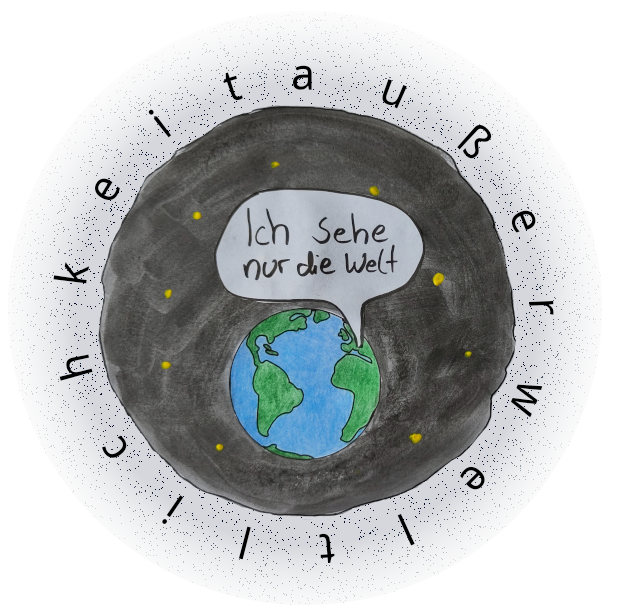

Es ist Sonntag. Ich bin gerade aufgewacht und versuche zu entscheiden, ob ich liegen bleiben soll oder
nicht. Nach mehreren gescheiterten Versuchen, meine Augen wieder zu schließen, akzeptiere ich, dass ich
nicht mehr müde bin, und stehe auf. Ich laufe in die Küche. Mit ein paar Handgriffen mach ich mir
Frühstück und da Sommer ist, trage ich alles auf den Balkon. Wie um diese Uhrzeit üblich, herrscht
morgendliche Stille. Die Luft ist noch kühl, aber die Sonne scheint warm
auf meine Haut. Ich setze mich, nehme mein Toast in die Hand und esse. Und mein zu Blick beginnt
zu wandern...
Über die Bäume... die Blätter, die leiße im Wind rauschen... über die Wiese... und die leere Straße...
Nur hin und wieder verirrt sich ein Passant in mein Blickfeld. Ich kann nicht anders, als mich wohl zu
fühlen. Ich finde es schön.
Und dann beginnen meine Gedanken zu wandern...
Warum löst genau diese Zusammenstellung an Eindrücken Wohlbefinden in mir aus? Warum
kann ich diesen Augenblick schön finden? Wie kann es sein, dass zum Einen Ich die Fähigkeit habe, etwas schön zu finden,
aber zum Anderen die Welt auch noch genau das enthält, was ich
schön finden kann? Wenn die Welt doch nur ein Ort ist, an dem physikalische Gesetze willkürlich ihr
Unwesen treiben, ich aber etwas bin, was dieses Treiben als schön empfinden kann, dann... Was, um alles
in der Welt, bin ich?
Nachdem ich mir diese Frage zum aller ersten Mal auf diese Weise gestellt hatte, hat sie mich nicht
mehr los gelassen. Was, um alles in der Welt, bin ich?
Mein Leben ist die Suche nach einer Antwort. Ich versuche immer wieder zu verstehen, welche
Bedeutung ich mir selbst in dieser Welt geben muss. Erfreulicherweise habe ich manchmal
Ideen, die ich für tatsächlich überzeugend halte. Doch egal, wie überzeugend eine Idee ist, bleibt mir
letztlich doch nichts als der Zweifel.
Ich habe keinen Maßstab, an dem ich meine Ideen messen kann. Alles, was ich denke, kommt mir
willkürlich vor. Natürlich kann ich Argumente für dieses oder jenes anbringen, aber letztendlich
kann ich trotzdem Unrecht haben. Leztlich muss ich Unrecht
haben. Denn ich habe nur eine begrenzte Perspektive auf die Welt. Und mit der Begrenztheit meiner
Perspektive geht auch Fehlbarkeit einher. Ich habe eine fehlbare Perspektive auf die Welt. Und ich kann
meine fehlbare Perspektive nicht verlassen. Ich bin meine
fehlbare Perspektive.
Aber muss ich wirklich für immer mit diesen Zweifeln leben? Kann es keine Gewissheit geben? Was heißt es
eigentlich, Gewissheit in der Frage, was ich bin, zu haben?
Die Antwort ist eigentlich ganz einfach: Zu wissen, was sich außerhalb der Welt befindet. Alle Zweifel,
die ich haben kann, rühren daher, dass ich nicht weiß, was die Welt ist und warum sie so ist, wie sie
ist. Ist das, was ich von der Welt sehe, alles was da ist? Oder hat die Welt eine Außenseite, einen
äußeren Kontext, eine Außerweltlichkeit. Wenn das, was ich von der Welt sehe, alles ist, was da ist,
kann ich durch erforschen der Welt zu einer Antwort kommen. Allerdings kann ich nur wissen, ob das, was
ich von der Welt sehe, alles ist, was da ist, wenn ich von der Außerweltlichkeit weiß, dass sie nicht
exisiert. Und wenn die Außerweltlichkeit doch existiert, muss die Außerweltlichkeit ebenfalls erforscht
werden.
Es gibt nur ein Problem. Ich kann kein Wissen über die Außerweltlichkeit erlangen. Weder, ob sie
überhaupt existiert, noch was sich im Falle ihrer Existenz in ihr befindet.
(1) Erlangen von Wissen über die Außerweltlichkeit von innerhalb der Welt heraus:
Um Wissen über die Außerweltlichkeit von innerhalb der Welt zu erlangen, müsste ich von innerhalb
der Welt unterscheiden können, was zur Außerweltlichkeit und was zur Welt gehört. Diese
Unterscheidung
ist mir jedoch ohne bereits Vorhandenes Wissen über die Außerweltlichkeit nicht möglich. Und da ich
stand jetzt kein Wissen über die Außerweltlichkeit habe, kann ich folglich die nötige Unterscheidung
nicht treffen und damit kein neues Wissen über die Außerweltlichkeit erlangen.
Außerdem müsste ich, um überhaupt zwischen der Welt und der Außerweltlichkeit unterscheiden zu können,
die Außerweltlichkeit von innerhalb der Welt sehen können. Es ist mir aber grundlegend unmöglich, aus
der Welt heraus zu blicken. Wie eine Figur in einem Computerspiel nur dahin blicken kann, wo auch das
Computerspiel ist, so kann ich nur dahin blicken, wo auch die Welt ist. Wie alles, was eine
Computerspiel-Figur sehen kann, zum Computerspiel gehört, so gehört alles, was ich sehen kann zur Welt.
Die Außerweltlichkeit bleibt mir von innerhalb der Welt verborgen.

(2) Erlangen von Wissen über die Außerweltlichkeit durch Verlassen der Welt:
Da ich Wissen über die Außerweltlichkeit nicht von innerhalb der Welt erlangen kann, muss ich die
Welt
für das Erlangen dieses Wissens verlassen. Ich kann die Welt allerdings nicht verlassen, da ich
in den Mitteln dieser Welt existiere. Ich bin auf die
grundlegenden Mechanismen und Eigenschaften dieser Welt angewiesen, damit mein Körper und mein Geist
existieren kann. Meine Existenz ist nichts von dieser Welt unabhängiges, sondern ich bestehe aus dieser Welt. Wo diese Welt nicht ist, kann ich nicht
sein.
Die Außerweltlichkeit muss zwingend etwas von der Welt unterschiedliches sein, da die Gesetze der Welt
im Falle der Existenz der Außerweltlichkeit durch die Außerweltlichkeit bestimmt werden. Die
Außerweltlichkeit unterliegt selbst nicht diesen Gesetzen. So wie alles, was in dieser Welt ist, durch
die Gesetze der Welt bestimmt wird, so wird die Welt selbst durch die Außerweltlichkeit bestimmt.
Also scheint die Sache verloren? In einer Hinsicht ja. Ich kann nicht zweifelsfrei begreifen, was ich
bin. Ich kann die Frage, was sich außerhalb der Welt befindet, nicht einfach beiseite schieben, denn sie
ist eine berechtigte Frage. Allerdings muss die Antwort immer offen bleiben. Und diese Konstellation
bringt das Sonderbare für mich in die Welt. Ich blicke auf die Welt, ohne dass ich sie begreifen kann.
Und obwohl ich die Welt nicht begreifen kann, ist sie trotzdem da.
In einer anderen Hinsicht ist die Sache damit aber auch beantwortet. Anstatt meine Gedanken auf die
Außerweltlichkeit, und damit auf einen unanzweifelbares Fundament stellen zu wollen, stelle ich mich
meiner Fehlbarkeit. Ich brauche keinen Fels in der Brandung, der mir die Bürde nimmt, mich rechtfertigen
zu müssen. Ich akzeptiere die Tatsache, dass es soetwas wie "Recht haben" in dieser Sache nicht gibt.
Ich bin, was ich will, das ich bin. Und dadurch bin ich frei.
Was bin ich?